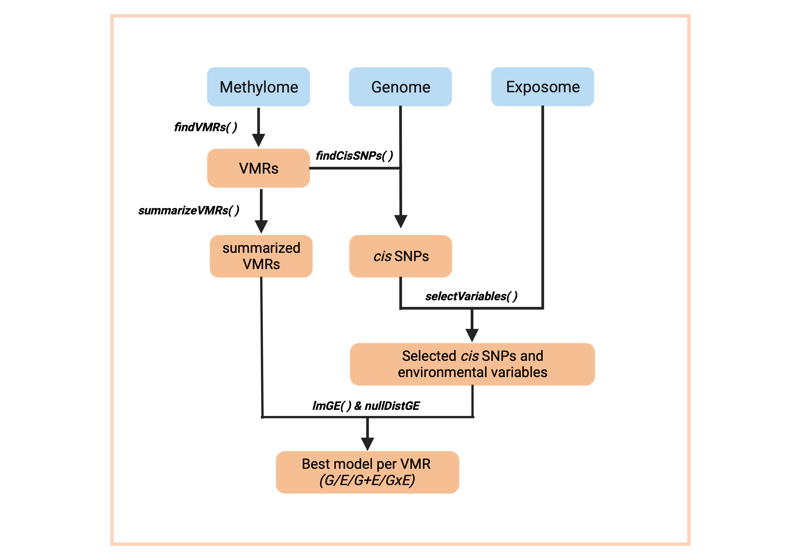

Overview
Regional Association of Methylation variability with genotype and ENvironment (RAMEN) is an R package whose goal is to identify Variable Methylated Regions (VMRs) in microarray DNA methylation data. Additionally, using Genotype (G) and Environmental (E) data, it can identify which G, E, G+E or GxE model better explains this variability.
Installation
You can install the development version of RAMEN from GitHub with:
# install.packages("devtools")
devtools::install_github("ErickNavarroD/RAMEN")Core functions
RAMEN consists of six main functions:
-
findVMRs()identifies Variable Methylated Regions (VMRs) in microarrays -
summarizeVMRs()summarizes the regional methylation state of each VMR -
findCisSNPs()identifies the SNPs in cis of each VMR -
selectVariables()conducts a LASSO-based variable selection strategy to identify potentially relevant cis SNPs and environmental variables -
lmGE()fits linear single-variable genetic (G) and environmental (E), and pairwise additive (G+E) and interaction (GxE) linear models and select the best explanatory model per VMR. -
nullDistGE()simulates a delta R squared null distribution of G and E effects on DNAme variability. Useful for filtering out poor-performing best explanatory models selected by lmGE().
Altogether, these functions create a pipeline that takes a set of individuals with genotype, environmental exposure and DNA methylation information, and generates an estimation of the contribution of the genotype and environment to its DNA methylation variability. Functions that conduct computationally intensive tasks are compatible with parallel computing.

Usage
Please go to the Get started tab in the package website or check the vignette for a detailed tutorial about how to use RAMEN.
Variations to the standard workflow
Besides using RAMEN for completing the analysis mentioned above, the package provides individual functions that could help users in other tasks, such as:
- Reduction of tests prior to an EWAS or differential methylation analysis (i.e., conducting the analyses on identified VMRs to reduce redundant tests by grouping nearby correlated CpGs and to avoid tests in non-variant regions)
- Fit additive and interaction models given a set of variables of interest and select the best explanatory model for DNAme data.
- Quickly identify SNPs in cis of CpG probes for variable reduction during mQTL analyses.
- Get the median correlation of probes in regions of interest (with
medCorVMR()).
How to get help for RAMEN
If you have any question about RAMEN usage, please post an issue in this github repository so that future users also benefit from the discussion As an alternative option, you can contact Erick Navarro-Delgado at erick.navarrodelgado@bcchr.ca.
Acknowledgments
I want to thank Dr. Keegan Korthauer and Dr. Michael S. Kobor for their supervision, feedback and support throughout the development of this package. Also, I want to thank the members of the Kobor and Korthauer lab for their comments and discussion.
The RAMEN package logo was created by Carlos Cortés-Quiñones and Dorothy Lin. Carlos created the drawing, and Dorothy refined the logo and did the lettering.
Funding
This work was supported by the University of British Columbia, the BC Children’s Hospital Research Institute and the Social Exposome Cluster.
Citing RAMEN
The manuscript detailing RAMEN and its use is currently under preparation. For more information about this please contact Erick I. Navarro-Delgado at erick.navarrodelgado@bcchr.ca.